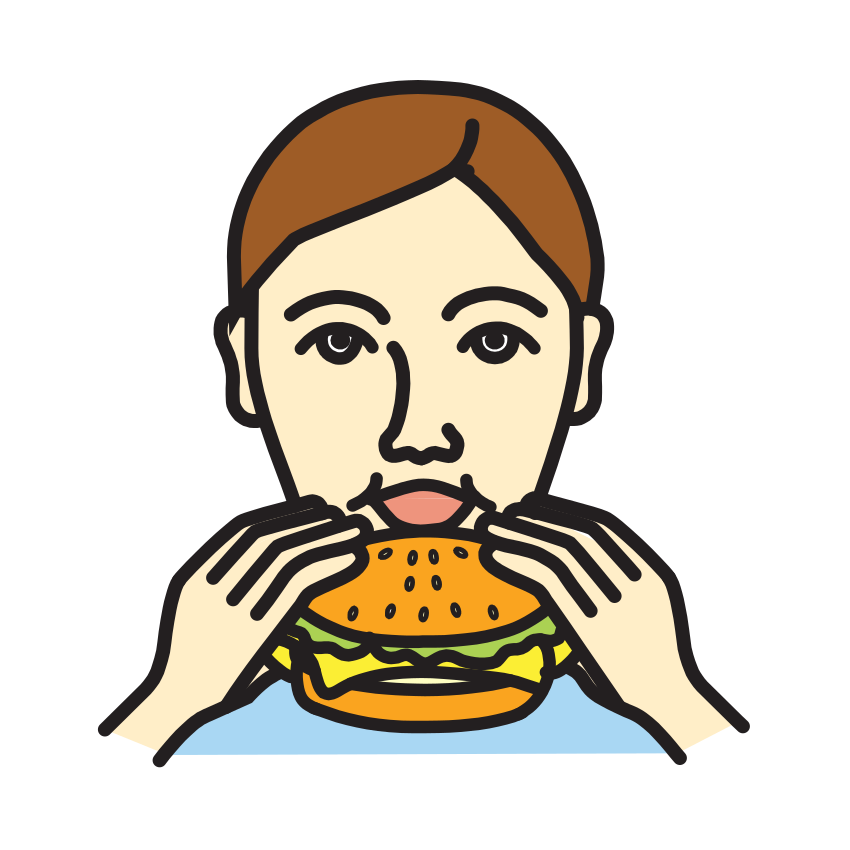
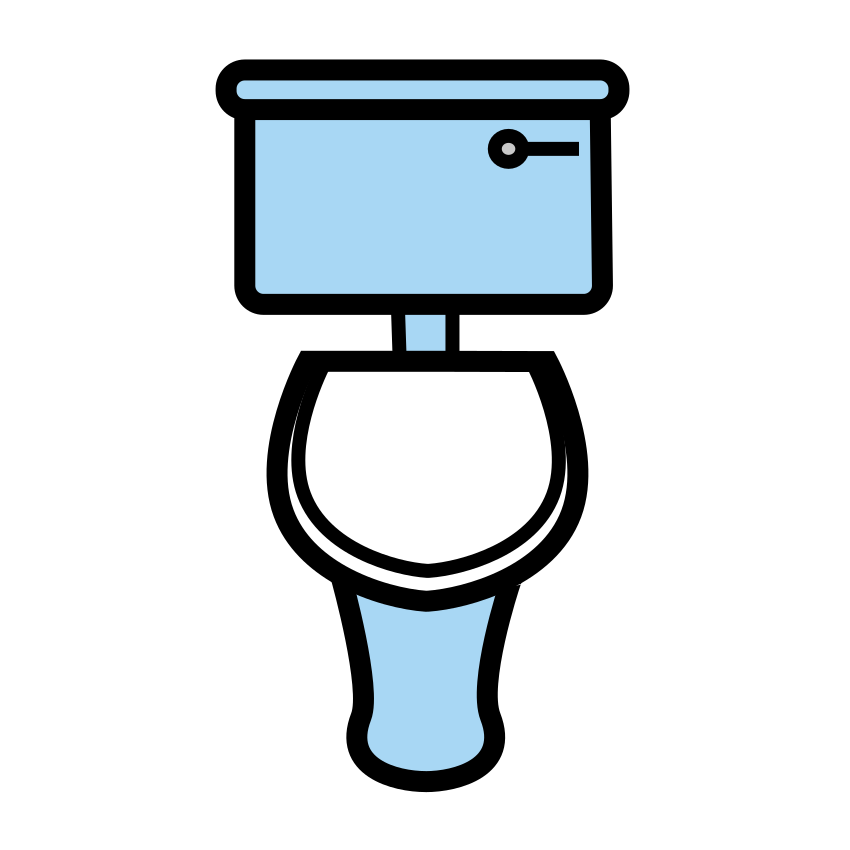

Get started
Five short steps. The first three put V.O.I.C.E. (Variable Output for Individualized Communication and Expression) on the iPad. The last two help you through the first week.
Dibs’s First Day
About 2 minutes.
A story about your first day with a talker. Tap to choose what the grown-up does.
Your first day
- Start with the six first words.
- Show, don’t test. Tap the word as you say it.
- Keep the iPad close, all day.
- Every tap is talking. Answer it.
- Make the words work. “Stop” means stop.
- Show words in everyday moments: snack, bath, play, getting dressed.
This is a made-up story. Every child is different. If your child has a speech-language pathologist or BCBA, ask them which words to show next.
-
Open V.O.I.C.E. on the iPad
On the iPad, open Safari and go to the V.O.I.C.E. link. It has to be Safari for the next step to work.
rwawrzonkowski-dotcom.github.io/AAC-App

Reading this on a phone or computer? Point the iPad’s camera at this code and tap the link that appears.
-
Add it to the Home Screen
This turns V.O.I.C.E. into its own app with its own icon.
- Tap the Share button in Safari (the square with an arrow pointing up).
- Tap Add to Home Screen.
- Tap Add.
From now on, open V.O.I.C.E. from its icon. Once it has opened one time, it works without the internet.
-
Set it up
The first screen asks three things. You can change all of them later.
- Who you are. “Parent or caregiver” shows the everyday settings. “Clinician or teacher” adds teaching sessions and data.
- The learner’s name. This is optional.
- The board. Pick one of the sizes below.
24 buttonsLarge buttons for early skills: asking, taking a break, finished, yes and no. Starts with 6 words.45 buttonsThe standard board. Choose the option that starts with 6 words and reveals more as the learner grows.84 buttonsA larger board, 12 across and 7 down, with smaller buttons and more words on the main page.Not sure which one? Ask the child’s speech-language pathologist or behavior analyst.
V.O.I.C.E. then asks you to choose a 4-digit passcode. It opens the adult menu. To get there, hold the small circle on the board for 3 seconds, then enter the passcode.
Can’t hear it? Turn the iPad’s volume up while V.O.I.C.E. is talking, and check that the iPad is not on silent.
-
The first week: six words
V.O.I.C.E. starts with six words a child needs every day.

eatdrink
bathroomThe most helpful thing you can do is use the board yourself. This is called modeling.
- Tap the word as you say it. At snack: “Time to eat.” Pouring juice: “More?”
- Use everyday routines. Meals, the bathroom, play time and getting dressed all have a place for these words.
- Don’t make the child copy you. Just show how it works, the way you would talk to a baby long before they talk back.
- Treat every tap as talking. If the child taps “more,” give more, even if it looks like an accident.
- Keep the iPad close. A voice only helps if it is within reach.
When the child is using these words, the adult menu lets you move to the next stage. New words appear in their own saved spots.
-
Save a backup
Everything V.O.I.C.E. knows about a learner lives only on the iPad. A backup is the one safety net.
- Hold the adult circle for 3 seconds and enter your passcode.
- Open Backup.
- Save the file somewhere safe, like the Files app or iCloud Drive.
To bring a learner back, or move to a new iPad, open V.O.I.C.E. and choose Restore from a backup file.
Good to know
Clearing Safari’s website data erases V.O.I.C.E.’s learners, settings and photos. Save a new backup now and then, and after any big change.
To get the newest version of V.O.I.C.E., fully close it and open it again.
That’s it. Tell me how it goes, read common questions, or see how V.O.I.C.E. teaches.

See every feature in action
Sixteen small, working examples. Try the teaching tools, the tone wheel, the scene maker and more, right here on the page.
Step-by-step guides
Short how-tos for parents, teachers and therapists, plus printable quick-start sheets.